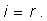

Prima lege a reflexiei luminii: Raza incidentă, normala la suprafaţă în punctul de incidenţă şi raza reflectată sunt în acelaşi plan. (figura 1)
Observaţiile şi măsurătorile atente au condus la:
Prima lege a reflexiei luminii: Raza incidentă, normala la suprafaţă în punctul de incidenţă şi raza reflectată sunt în acelaşi plan. (figura 1)
 Legile reflexiei luminii.
Legile reflexiei luminii.Ai remarcat aceasta când ai trimis lumina razant la suprafaţa foii şi ai observat dârele de lumină incidentă şi reflectată, ambele fiind în planul foii.
A doua lege a reflexiei luminii: Măsura unghiului de incidenţă este egală cu măsura unghiului de reflexie (figura 1):

Ai obţinut aceasta din datele pe care le−ai colectat trimiţând lumina pe faţa plană a semicilindrului de sticlă.
Acum te poţi folosi de aceste legi pentru a afla dinainte drumul luminii care se reflectă pe suprafaţa unui corp, oricare ar fi unghiul de incidenţă!
 Provocarea 1
Provocarea 1
Un copil care se joacă pe covor cu soldăţei şi mici păpuşi, şi−ar dori să le poată vedea ca şi când ar privi de la nivelul covorului.
Cum ai putea realiza un periscop care, aşezat pe covor, să trimită lumina spre ochii copilului (ca în figura 2)?
Periscop care oferă o imagine de la nivelul covorului.Îţi sunt de folos legile reflexiei luminii?
Putem oare obţine şi un set de legi ale refracţiei luminii?